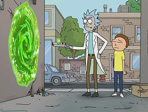
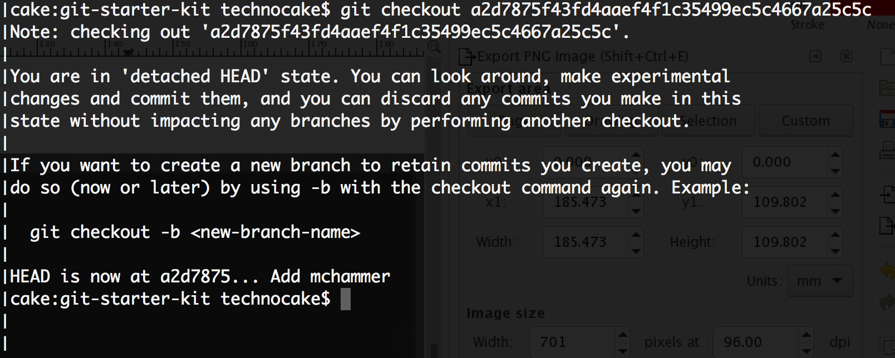
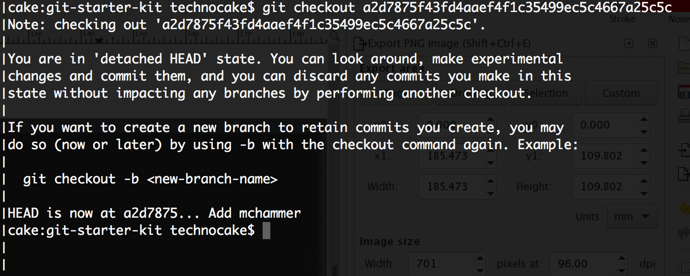

Git Starter Kit
infomedia - hackathon
Created by Robin Garen Aaberg / @technocake
100% basic terminal
cd # bytter mappe i terminalen
ls # lister filer i en mappe
versjonskontroll: PÅ
git init
git init mappe
Git, hva er status-quo?
git status
git init mappe
Gits tre stadier
1. Untracked:
filen eksisterer men er ikke en del av gits versjonskontroll.
2. Staged:
filen er lagt til git's versjonskontroll, men forandringene er ikke commited
3. Committed:
Forandringene er commited - vi har nå en ny versjon
Første stadie: Untracked
Andre stadie: Staged
git add index.html
git add img #legger til alle filer i en mappe
git add img #legger til alle filer i en mappe
git add img #legger til alle filer i en mappe
git add . #legger til alt i den mappen man er i.
git add img #legger til alle filer i en mappe
git add . #legger til alt i den mappen man er i.
Tredje stadie: Commited
git commit
git commit -m "beskjed her"
Ny versjon laget
git log

Oppsummering
git init # lag git-repo av mappen din
# 1. stadie - untracked
git status # viser det
# 2. stadie - staged (to be commited)
git add fil1.txt # en spesifikk fil
git add . # alle filer i denne mappen
# 3. stadie - commiting to a new version.
git commit -m "beskjed her"
git status # nothing to commit
git log
tilbake til denne loggen
La oss reise i tid
Morty, you need to come with me!
Checkout
git checkout a2d7875f43fd4aaef4f1c35499ec5c4667a25c5c
git checkout a2d7875f43fd4aaef4f1c35499ec5c4667a25c5c
 

Let's go ...

git checkout master